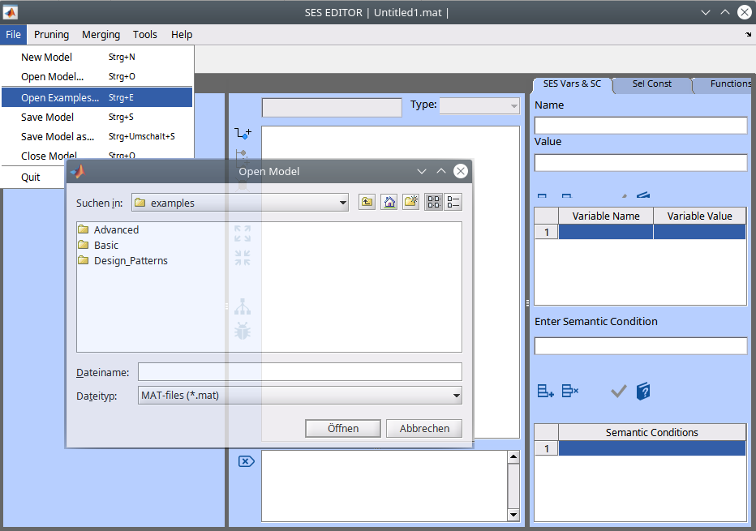
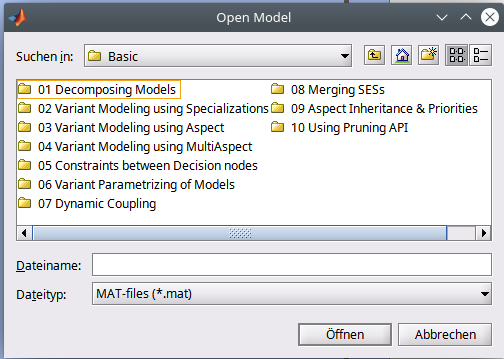
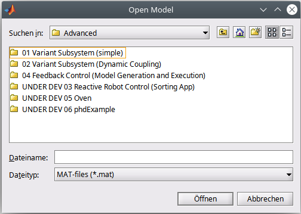
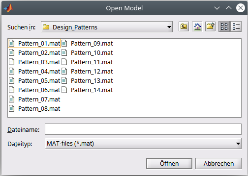

SES Examples Documentation
The SES Toolbox has been developed by the Research Group Computational Engineering and Automation (CEA) at Wismar University of Applied Sciences.It can be used for ontology based modeling of systems using the System Entity Structure (SES) approach. A set of systems (e.g. system variants), called a family of systems, is specified with an SES. In conjunction with basic systems, which are organized in a Model Base (MB), executable models for the MATLAB / Simulink environment can be generated.
The toolbox is based on a subset of the long term research of B.P. Zeigler, who comprehensively introduced the SES/MB approach with his book "Multifacetted Modeling and Discrete Event Simulation" in 1984. Since that time the approach was continuously advanced by Zeigler and others. Accordingly, the toolbox also introduces new concepts, which increase the flexibility of modeling using the SES ontology and extends the scope of application. Moreover, it provides additional features particularly useful for modeling and simulation in the MATLAB/Simulink environment. Of course, the toolbox is also useable in combination with other proprietary MATLAB toolboxes, such as SimEvents or Simscape, or free available toolboxes, such as the Parallel Discrete Event System (PDEVS) toolbox for MATLAB (MatlabDEVS Toolbox) also developed by the Research Group CEA.
For more information about the SES theory and the toolbox itself look to the RG CEA SES tbx. web site. The examples can be seen as a pragmatic introduction tutorial. They demonstrate step by step basic SES modeling features.
We advice to study the examples in their order, beginning with the Basic examples. 
Basic examples - basic usage of tbx
| # | Basic | This example shows, how ... |
|---|---|---|
| 01 | Decomposing Models Using Aspects | you can describe a decomposition of a modular-hierarchical model. Furthermore it shows, how to specify coupling relations beetween components. |
| 02 | Variant Modeling Using Specializations | you can describe different model structures in a single SES by using Specializations. Furthermore the example introduces SES Variables and Semantic Conditions. |
| 03 | Variant Modeling Using Aspects Siblings | you can describe different model structures in a single SES by using Aspect-Siblings |
| 04 | Variant Modeling Using a MultiAspect | you can describe different model structures consisting of a varying number of replications of components from the same type in a single SES by using a MultiAspect. |
| 05 | Constraints Between Decision Nodes | you can define constraints between decision nodes. It is an extension to example "3 Variant Modelling using Aspects". So you will find the general part of the description in example 3. |
| 06 | Entity Attributes & SES Functions | you can assign parameters (attributes) to entity nodes. Furthermore, it shows how to deal with complex calculations by using SES Functions. The example SES has the same structure as the SES from example 2 "Variant Modelling Using Specializations", but it has been extended by additional attributes. |
| 07 | Dynamic Couplings Using SES Functions | you can describe different coupling relations with a single Aspect node by using an SES Function. |
| 08 | Merging SESs & Attribute Inheritance | you can merge several SESs to one SES. Moreover, the example shows the concept of Attribute Inheritance between the parent and children entities at Specializations and what you have to respect when SESs are merged. |
| 09 | Aspect Inheritance & Priorities | you can use the priority property of Aspect and MultiAspect nodes to solve decision problems caused by Aspect Inheritance. |
| 10 | Using the Toolbox API | you can use the toolbox API for pruning your SES apart from the Editor with a MATLAB script. Moreover, it explains the difference between pruning and flattening. The SES here is taken from example 3. |
Advanced examples - more features of the tbx
| # | Advanced | This example shows, how ... |
|---|---|---|
| 01 | Variant Subsystem (simple) | to specify and manage a set of alternative system variants using an SES and the SES Toolbox API. Moreover, it shows how to generate automatically executable Simulink models based on an SES and Simulink's predefined blocksets. The basic problem statement of this example is taken from the Simulink examples documentation (topic Variant Modeling), where you can find further information about it. |
| 02 | Variant Subsystem (Dynamic Couplings) | model generation in combination with an SES with dynamic couplings can be performed. The example is a straightforward extension of the example A01 "Variant Subsystem (simple)". In addition, it demonstrates the implementation of a reactive simulation study using several model generations. |
| 03 | Reactive Robot Control (Sorting App) | to use the toolbox and the SES/MB approach in a more complex context by the example of a reactive robot control application. |
| 04 | Feedback Control System (Modeling, Model Generation and Execution) | to use the toolbox and the SES/MB approach to specify, manage, generate, and execute a set of Simulink models of alternative system variants. |
Design patterns - blueprints for multiple purposes

| # | Design Patterns | This pattern shows, how ... (PDF documentation) |
|---|---|---|
| 01 | Aspect Node | a system a can be constructed from two entities b and c. |
| 02 | Multi-Aspect Node | a system a can be constructed from a number of entities of the same type. |
| 03 | Specialization Node | it can be determined if a system a is of type b or c by evaluating the specialization rule. |
| 04 | Aspect Siblings | aspect rules are employed. |
| 05 | Multi-Aspect Siblings | CANNOT BE PRUNED! |
| 06 | Aspect and Multi-Aspect Siblings | CANNOT BE PRUNED! |
| 07 | Specialization Siblings | all specializations on the same level are evaluated. |
| 08 | NONE Element | the non-existance of a system can be expressed. |
| 09 | Logical OR | to construct logical OR by using an aspect node whose children are followed by specializations containing NONE elements. |
| 10 | Two Specialization Nodes in One Path | the axiom of attribute inheritance affects pruning. |
| 11 | Specialization with Succeeding Aspect | ... |
| 12 | Specialization and Aspect Siblings | ... |
| 13 | Subtree After Multi-Aspect | UNDOCUMENTED |
| 14 | Complex Tree Including Multiple Multi-Aspects | UNDOCUMENTED |